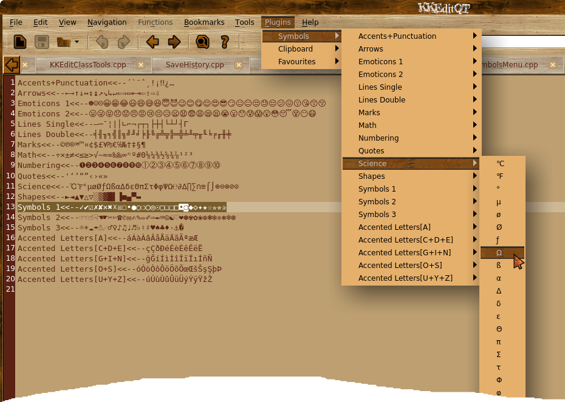

MENU NAME<<--SYMBOLS
...
MENU NAME<<--SYMBOLS
Feel free to add extras, extra lines can be added to the installed file ( usually /usr/share/KKEditQT/plugins/SymbolsMenu/indicator-chars.txt ) or to the file before compiling.
Select a symbol like so:

Then just paste it into your document: